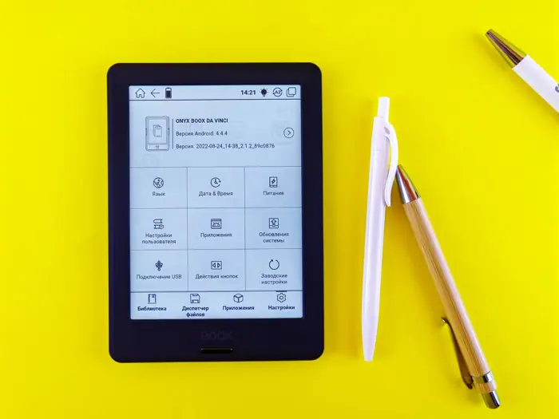

The Boox Palma 3 gets stylus support and a sleek redesign

What happened
How-To Geek reported: “The Boox Palma 3 eReader now has pen support—and it's not alone - How-To Geek” [4].
androidpolice.com framed the same development as: “The Boox Palma 3 is the compact e-reader Android fans have been waiting for” [6].
6 distinct outlets were tracked covering this story today.
How outlets are reporting it
The Verge: “The Boox Palma 3 gets stylus support and a sleek redesign” [1]
CediRates: “The Boox Palma 3 gets stylus support and a sleek redesign” [2]
engadget.com: “The New Boox Palma 3 Comes With Stylus Support And An Aluminum Build” [3]
How-To Geek: “The Boox Palma 3 eReader now has pen support—and it's not alone - How-To Geek” [4]
finance.biggo.com: “Boox Palma 3 Swaps Plastic for Aluminum, Adds Stylus Support at $340” [5]
androidpolice.com: “The Boox Palma 3 is the compact e-reader Android fans have been waiting for” [6]
Background and context
This brief aggregates 6 independent publishers covering the same event; each headline in the section above reflects that outlet’s own framing. Full original reporting is linked in the sources panel below.
Why it matters and what to watch
Sustained coverage across 6 outlets signals this story is developing and likely to move.
For the latest figures, official statements and corrections, follow the linked originals.
Sources & further reading
- The Verge The Boox Palma 3 gets stylus support and a sleek redesign
- CediRates The Boox Palma 3 gets stylus support and a sleek redesign
- engadget.com The New Boox Palma 3 Comes With Stylus Support And An Aluminum Build
- How-To Geek The Boox Palma 3 eReader now has pen support—and it's not alone - How-To Geek
- finance.biggo.com Boox Palma 3 Swaps Plastic for Aluminum, Adds Stylus Support at $340
- androidpolice.com The Boox Palma 3 is the compact e-reader Android fans have been waiting for